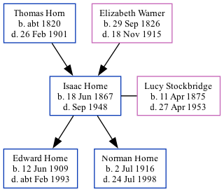

Isaac Horne 1867 - 1948
[ Home ] | [ Calendar ] | [ Surnames Index ] | [ Family History ]A gardener domestic servant and the son of Thomas Horn (a farm bailiff) and Elizabeth Warner (a general shopkeeper), Isaac Horne, the great-great-uncle of <a href="I1.html">Nigel Horne</a>, was born in St Peters, Thanet, Kent, England on Jun 18, 1867<span class="citation">1,2,3,4,5,6,7,8</span> and married Lucy Stockbridge (a dressmaker with whom he had 2 children: <a href="I560.html">Edward John</a> and <a href="I561.html">Norman George</a>) at Cavendish Baptist Church, Cavendish Street, Ramsgate, Kent, England on Jun 1, 1907<span class="citation">9</span>.</p><p>Isaac spent all of his life in Kent, England. Throughout his life, he lived in several places around the county: at Northdown, Margate on Apr 2, 1871<span class="citation">10</span>; on Buddles Farm, Dane Court Road, St Peters, Thanet on Apr 3, 1881<span class="citation">11</span>; at 194 Reading Street, St Peters, Thanet on Apr 5, 1891<span class="citation">12</span>; at 1 Welbeck Terrace, Reading Street, St Peters, Thanet on Mar 31, 1901<span class="citation">4</span> (the same place as his father had been living in 1895); at 23 Victoria Avenue, Northdown, Margate on Apr 2, 1911<span class="citation">13</span>; and on The Cottage, Fairfield Road, St Peters, Thanet on Jun 19, 1921<span class="citation">14</span>, on Sep 29, 1939<span class="citation">6</span> and in 1948 which is where he died in Sep 1948<span class="citation">7</span>.
Parents
- Thomas was born c. 1820
- Elizabeth Ann was born on Sep 29, 1826
Children
- Edward John was born on Jun 12, 1909
- Norman George was born on Jul 2, 1916
Citations
- 1871 England Census Online publication - Provo, UT, USA: The Generations Network, Inc., 2004.Original data - Census Returns of England and Wales, 1871. Kew, Surrey, England: The National Archives of the UK (TNA): Public Record Office (PRO), 1871. Data imaged from the National
- 1881 England Census Online publication - Provo, UT, USA: The Generations Network, Inc., 2004. 1881 British Isles Census Index provided by The Church of Jesus Christ of Latter-day Saints © Copyright 1999 Intellectual Reserve, Inc. All rights reserved. All use is subject to the
- 1891 England Census Online publication - Provo, UT, USA: The Generations Network, Inc., 2005.Original data - Census Returns of England and Wales, 1891. Kew, Surrey, England: The National Archives of the UK (TNA): Public Record Office (PRO), 1891. Data imaged from The National
- 1901 England Census Online publication - Provo, UT, USA: The Generations Network, Inc., 2005.Original data - Census Returns of England and Wales, 1901. Kew, Surrey, England: The National Archives of the UK (TNA): Public Record Office (PRO), 1901. Data imaged from the National
- 1911 England Census Online publication - Provo, UT, USA: Ancestry.com Operations, Inc., 2011.Original data - Census Returns of England and Wales, 1911. Kew, Surrey, England: The National Archives of the UK (TNA), 1911. Data imaged from the National Archives, London, England.
- 1939 Register - Findmypast (was recorded at this address)
- England & Wales, Death Index: 1984-2005 Online publication - Provo, UT, USA: The Generations Network, Inc., 2007.Original data - General Register Office. England and Wales Civil Registration Indexes. London, England: General Register Office. © Crown copyright. Published by permission of the Cont
- England & Wales, FreeBMD Birth Index, 1837-1915 Online publication - Provo, UT, USA: The Generations Network, Inc., 2006.Original data - General Register Office. England and Wales Civil Registration Indexes. London, England: General Register Office. © Crown copyright. Published by permission of the Cont
- 1911 England Census Online publication - Provo, UT, USA: Ancestry.com Operations, Inc., 2011.Original data - Census Returns of England and Wales, 1911. Kew, Surrey, England: The National Archives of the UK (TNA), 1911. Data imaged from the National Archives, London, England.
- 1871 England, Wales & Scotland Census - Findmypast (was age 3 and the son of the head of the household)
- 1881 England, Wales & Scotland Census - Findmypast (was age 12 and the son of the head of the household)
- 1891 England, Wales & Scotland Census - Findmypast (was age 23 and the son of the head of the household)
- 1911 Census for England & Wales - Findmypast (was age 43 and the head of the household)
- 1921 Census Of England & Wales - Findmypast (was age 54 and the head of the household)
Media
Isaac Horne - Lucy Stockbridge - marriage

Thanet Advertiser 21 Sep 1948
1939 Register Transcription - TNA-R39-1685-1685I-018-13
England & Wales births 1837-2006 - BMD/B/1867/3/AZ/000314/077
England & Wales marriages 1837-2008 - BMD/M/1907/2/AZ/000184/062
1911 Census for England & Wales - GBC/1911/RG14/04509/0275/1
1871 England, Wales & Scotland Census - GBC/1871/0014275869
1891 England, Wales & Scotland Census - GBC/1891/0005914775
England & Wales deaths 1837-2007 - BMD/D/1948/3/AZ/000391/045
Family Tree
Generated by Ged2Site. Last updated on Jul 20, 2025